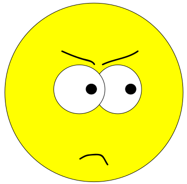

DOM: propojení JavaScriptu s HTML a CSS
Document Object Model (DOM) je standard, pomocí něhož můžeme z JavaScriptu libovolně měnit jak jakýkoliv obsah
vyjádřený v HTML, tak i jakýkoliv vzhled popsaný v CSS. V rámci DOMu se z naší stránky stane jakýsi strom složený
z jednotlivých elementů podle toho, jak jsou do sebe vzájemně vnořeny. K elementům v tomto stromu můžeme z
JavaScriptu přistupovat a libovolně je modifikovat (měnit jim obsah, měnit jim atributy, měnit jim styly).
 (zdroj)
(zdroj)
Postup pro práci s DOMem je typicky ten, že nejprve ve stromu vyhledáme element, který chceme modifikovat
(například pomocí document.querySelector()), a referenci na něj si uložíme do nějaké proměnné. S její
pomocí už potom můžeme snadno měnit například v elementu obsažený text, jeho atributy (třeba adresu obrázku) nebo
jakékoliv CSS vlastnosti.

Čtvereček, který navíc může nebo nemusí být aktivní.
Cvičení
- Vyberte si na stránce libovolný element (třeba nadpis nebo odstavec) a změňte mu text.
- Vyberte si na stránce libovolný element a změňte mu barvu textu a barvu pozadí.
-
Vyberte si na stránce libovolný element a nastavte mu text na tučný (nebo na kurzivu nebo mu změňte velikost
písma).
-
Najděte si někde obrázek kočky a obrázek psa a uložte si je do této složky s naší stránkou. Nejprve vložte do
stránky obrázek s kočkou a přesvědčte se, že se správně zobrazí. Potom přes JavaScript nalezněte tento svůj
element obrázku a změňte mu adresu, aby se zobrazil obrázek psa.
- Nalezněte na stránce čtvereček a přidejte mu třídu aktivni.
-
Bonus: vzpomeňte si na CSS vlastnost position a její hodnotu absolute. Přidejte si na stránku
obrázek, kterému nastavíte právě absolutní pozici (nejspíš ještě v kombinaci s vlastnostmi top a
left). Následně obrázek opět nalezněte z JavaScriptu a změňte mu umístění.
Událostmi se budeme zabývat na samostatné stránce.
 (zdroj)
(zdroj)
{kind=link}